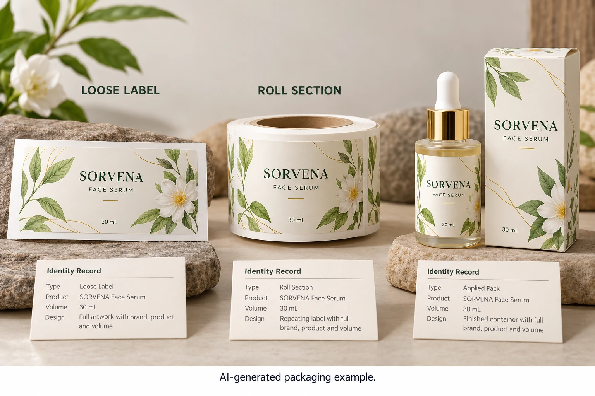

Choose the question before the specimen
A loose finished label can help locate artwork and review some print features. A supplied web section can preserve the arrangement of labels and backing. An applied pack adds the actual container and application context. Ask which question each retained object is intended to support.
Do not assume one specimen covers every property. A loose label cannot demonstrate the history of an applied bottle. A finished bottle may not preserve the liner or roll identity needed for a dispensing question. A photograph can locate a reference without replacing the physical evidence needed for another comparison.
The reorder guide connects the approved version and physical reference at repeat release. This article establishes how those references are selected and maintained before that future decision arises.
Give every object a traceable identity
Use identifiers available from the real job: product, artwork revision, supplier job, construction reference and relevant roll or production reference. Record who collected the sample, at what stage and what it is claimed to represent.
If the sample is an appearance model rather than production supply, state that. If its approval was limited to layout or one visual feature, preserve that limitation. Do not let the phrase approved sample silently expand into acceptance of adhesion, line operation and every later use condition.
Keep known differences from the released construction visible. A useful development reference can remain in the library, provided nobody mistakes it for the final accepted job. Separating development, accepted and investigation references can be as simple as clearly identified envelopes and a controlled index.
Assign custody and condition review
Agree who holds the samples, how the relevant parties can request them and what storage guidance applies. Obtain supplier instructions where construction or condition matters. This guide gives no universal retention period, environmental limit or legal recordkeeping rule.
Record known opening, handling or condition changes when they affect the sample's intended use. An old reference that has changed visibly may still identify the design, while becoming unsuitable as a precise appearance target. Ask the technical reviewer whether another reference is needed.
Avoid destructive examination of the only important specimen without an agreed plan. Where an investigation requires testing or shipment, record what leaves custody and what remains. The reference index should describe the physical material the team can actually retrieve today.
Build a small, usable reference index
The following fields help the next person decide whether the sample is relevant before requesting it from another site.
| Field | What to record | Why it matters |
|---|---|---|
| Sample ID | Unique local reference | Connects object, envelope and record |
| Type | Loose label, web section or applied pack | Defines which physical context remains |
| Job identity | Artwork, construction and relevant supply reference | Prevents comparing different revisions |
| Collection | Person and actual stage represented | Establishes provenance without invented batch scope |
| Acceptance | Accepted feature and recorded limitation | Separates reference from blanket approval |
| Custody | Location, owner and access route | Makes the specimen retrievable |
| Condition | Relevant history and current concern | Flags a questionable comparison target |
| Review/end point | Responsible decision and applicable requirement | Prevents an unexplained permanent archive |
Choose the necessary types, assign identifiers and connect the physical objects with the index. Have the relevant owners confirm what each reference represents. Before a later comparison, verify identity and condition again; do not assume that a familiar bottle on a shelf is the correct specimen.

Match the collection to the risk and workload
A hypothetical small brand repeating one established label may need a modest, clearly indexed set of accepted references. Duplicating every development swatch across several offices can add confusion if nobody maintains the identities.
A multi-site project with different application operations can have a reason to retain distinct supplied and applied references. Its plan should explain the differences and custody, rather than treating all three sites' samples as interchangeable.
If a later issue appears, the quality-evidence guide helps preserve and report affected material. Keep investigation specimens connected to the relevant accepted reference, while maintaining their different status. A retained good-looking sample does not prove every delivered unit was equivalent.
For cosmetic label procurement, include the current reference ID and the question it needs to answer alongside container, artwork and quantity details. Ask what relevant sample arrangement is available for the proposed job. The inquiry form drafts a message; send reference records by email or WhatsApp. Keep the object and its meaning together while both are easy to identify.